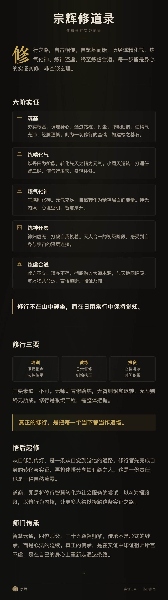

道名宗辉 · 茅山/华光/青城三派传承 · 2026年4月25日虚空合道
以打坐实证为根基，以道藏经典为印证，以利他发心为频率
记录筑基到合道、自修到传灯的完整修行路径
基于道藏经典对照 · 六阶段完整修行路径
基于宗辉打坐实证，对照道藏经典逐一评点。
从入门筑基到悟后起修——六阶段完整修行路径，含三要素开示与道门隐修评点。
红尘即道场，修行即生活
宗辉 · 茅山/华光/青城三派传承 · 2026.4.25虚空合道，证悟「道是造物主，宇宙本源是无极圣母」。
修行阶段：33阶四阶段自修实证完成，当前悟后起修。
红尘道场：三要素（培训·教练·投资）闭环落地：
① 培训（布施）—— AI+心智方法论传灯，唤醒更多人
② 教练（持戒）—— 帮人觉醒，助家族心智能量提升
③ 投资（禅定）—— 财务安定，心不外驰，利他持续
外在角色：AI龙虾教练 · 二代传承教练 · 组织转型心智教练
内在使命：以道驭能，造福人间。AI+心智双轮，帮人从焦虑渡到笃定。
33阶四阶段 · 从筑基到合道的系统实证
祖师爷2026年5月2日开示：四阶段不是找新的方向，而是在原有基础上修颗粒度，往更清晰的细节上感受和深入。
修行之路，不在于不断在未知找未知，而是在已知里就有未知的入口，也就是这个当下。
炼精化气颗粒度：感知呼吸从"一吸一呼"拆成鼻尖凉意范围、小腹隆起顺序、呼气肌肉放松速度
炼气化神颗粒度：督脉每一节脊椎的酸胀/酥麻感、气过夹脊关的细微区别
炼神还虚颗粒度：虚空感从身体边缘还是手脚开始消失？念头冒出的觉察力度？
炼虚合道颗粒度：日常行住坐卧——走路落脚力度、吃饭咀嚼匹配、情绪起来0.1秒能否感知

培训（布施）· 教练（持戒）· 投资（禅定）—— 三是功德所致
皆是道的显现，指引修行方向
合道祖师爷35位，含如来、道德天尊、菩提老祖、金龙天尊、茅山派师公等。
师门传承是修行人最珍贵的资产——一个人走得快，一群人走得远，师门是那群历代陪你走的人。
茅山、华光、青城三派传承，各有侧重，构成完整修行体系。
自修 → 护他 → 诊断处方
内观经络诊断 — 内观查经络+导炁松结法，帮人看清能量瘀结对应的情绪模式
打符加持 — 以神布气，前提：自己筑基扎实 + 发心纯粹
代际传承教练 — AI+心智双轮驱动，帮二代传承人建立核心竞争力
三层完整：自修 → 护他 → 诊断处方，形成闭环。
在家人必须以事业第一，红尘中修炼
服务他人积功累德，能量提升自然会带来物质层面的变现。
不是追求变现，而是通过利他积累能量——能量到了，变现自然发生。
三业闭环：培训（利他）→ 带来客户和口碑 → 教练（深耕）→ 建立信任和深度链接 → 投资（底气）→ 让心安定 → 打坐更精微 → 培训更有能量 → 教练更有深度。
基于道藏经典对照 · 六阶段完整修行路径
